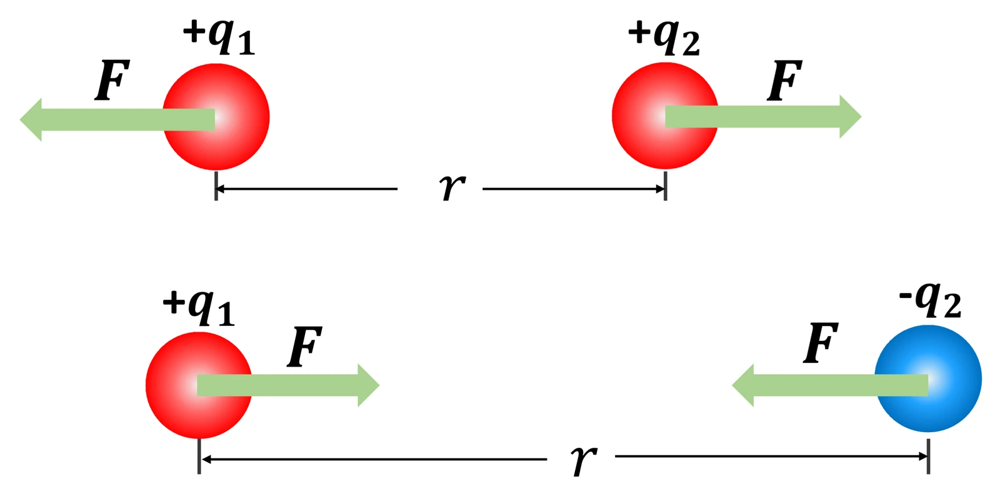

중2 과학 · 전기와 자기 · 웹툰 6화 「찌릿한 그 느낌 — 정전기와 전기력」
정전기와 전기력
실험에서 대전체의 전하 종류를 고르고 거리를 바꿔 가며 전기력을 쟀습니다. 같은 전하는 밀고 다른 전하는 당겼으며, 거리가 2배가 되면 힘은 1/4로 줄었습니다. 마찰 전기가 생기는 원리와 쿨롱 법칙을 정리합니다.
- 웹툰 6화
- 실험: 정전기와 전기력
- 과학 원리
- 자습 노트
- 07 전류·전압·저항
실험에서 얻은 것
실험 데이터 되짚기
두 대전체 사이의 거리를 바꿔 가며 전기력(상댓값)을 재면 이렇습니다.
| 거리 | 5 | 10 | 20 | 40 |
|---|---|---|---|---|
| 전기력 (상댓값) | 200 | 50 | 12.5 | 3.1 |
| 힘 × 거리² | 5 000 | 5 000 | 5 000 | 5 000 |
힘 × 거리²이 일정 — 전기력은 거리의 제곱에 반비례합니다. 거리가 2배면 힘은 1/4, 3배면 1/9. 같은 종류의 전하끼리는 밀고(척력), 다른 종류끼리는 당겼습니다(인력).
개념 정리
1. 마찰 전기 — 전자가 옮겨 간다
서로 다른 물체를 문지르면 전자가 한쪽에서 다른 쪽으로 옮겨 갑니다. 전자를 잃은 쪽은 (+), 얻은 쪽은 (−)로 대전됩니다(마찰 전기). 풍선을 머리에 문지르면 머리카락이 붙고, 겨울에 스웨터를 벗을 때 찌릿한 것이 정전기입니다. 대전된 물체를 가까이 가져가면 가까운 쪽엔 다른 전하, 먼 쪽엔 같은 전하가 유도됩니다(정전기 유도). 번개는 구름 속에 쌓인 전하가 한 번에 방전되는 아주 큰 정전기 현상입니다.
교재 그림
전자가 옮겨 가면 대전된다

원자핵(+)은 움직이지 않고 전자(−)만 옮겨 갑니다. 전자를 잃은 왼쪽은 (+), 전자를 얻은 오른쪽은 (−)로 대전됩니다.
움직여 보기
문지르면 무엇이 옮겨 갈까
처음엔 둘 다 (+)와 (−)의 수가 같아 전기를 띠지 않습니다. 문지르면 가벼운 전자(−)만 머리카락에서 풍선으로 옮겨 가고, (+)는 제자리에 남습니다. 그래서 전자를 잃은 머리카락은 (+), 얻은 풍선은 (−)를 띠고 서로 끌어당깁니다. (전하 수는 크게 줄여 그림)
2. 전기력과 쿨롱 법칙
전하를 띤 물체 사이에는 전기력이 작용해서 같은 종류끼리는 밀고(척력) 다른 종류끼리는 당깁니다(인력). 전기력의 크기는 두 전하량의 곱에 비례하고 거리의 제곱에 반비례합니다: F = k × q₁q₂ ÷ r²(k ≈ 9 × 10⁹ N·m²/C²). 그래서 대전체는 가까이 갈수록 급격히 세게 끌리거나 밀립니다. 중력과 닮았지만(역제곱) 전기력은 밀 수도 당길 수도 있고 훨씬 셉니다.
교재 그림
같은 전하는 밀고, 다른 전하는 당긴다

두 물체가 받는 힘 F는 크기가 같고 방향이 반대입니다. 거리 r이 2배가 되면 F는 ¼로 줄어듭니다.
움직여 보기
거리가 2배면 힘은 ¼ — 전기력 재 보기
보라 화살표 길이가 힘의 크기입니다. 거리 5 → 200, 10 → 50, 20 → 12.5, 40 → 3.1 — 거리가 2배가 될 때마다 ¼로 뚝 떨어지고, 힘 × 거리²은 언제나 5000입니다. 같은 전하는 서로 밀고(바깥쪽), 다른 전하는 당깁니다(안쪽). 두 물체는 크기가 같고 반대 방향의 힘을 받습니다.
3. 모형과 실제
화면의 ‘힘’은 단위 없는 상댓값입니다. 실제 마찰 대전체의 전하량은 수십 nC 정도라 힘은 μN 수준으로 아주 작지만 가벼운 종잇조각은 끌려옵니다. 쿨롱 법칙은 크기가 없는 점전하 사이의 식이라 실제 물체는 가까운 거리에서 벗어나고, 공기 중 습도가 높으면 전하가 새어 힘이 약해집니다. 복사기·레이저 프린터는 정전기로 토너를 종이에 붙이고, 공기 청정기는 먼지를 대전시켜 모읍니다. 문고리를 만지기 전 다른 금속을 살짝 만지면 전하가 미리 빠져 덜 찌릿합니다.
이 실험: 힘(상댓값) = 5000 ÷ 거리² · 힘 × 거리² = 일정 (역제곱 법칙)
“두 물체를 마찰시키면 한쪽에서 다른 쪽으로 전자가 이동해서 전기를 띠게 돼. 전자를 잃은 쪽은 (+)전하, 전자를 얻은 쪽은 (−)전하를 띠게 되는 거지.”
웹툰 6화 · 지유: “겨울에 스웨터 벗을 때 ‘찌릿’한 이유가 뭐야?” 피지(주황빛으로 변신)의 답.
“그래서 풍선을 머리에 문지르면 머리카락이 풍선에 달라붙는 거구나!”
웹툰 6화 · 피지: “맞아! 같은 종류의 전하끼리는 밀어내고, 다른 종류의 전하끼리는 끌어당겨. 이걸 전기력이라고 해.”
영상으로 보기
예제
두 대전체 사이 거리가 10일 때 전기력이 50이었다. 거리를 5로 줄이면? 30으로 늘리면?
거리 1/2 → 힘 4배 = 200. 거리 3배 → 힘 1/9 ≈ 5.6. 힘 × 거리² = 5000으로 확인: 5000 ÷ 25 = 200, 5000 ÷ 900 ≈ 5.6.
털가죽으로 문지른 플라스틱 막대가 (−)로 대전되었다. 털가죽은 어떤 전하를 띠고, 두 물체 사이에는 어떤 힘이 작용할까?
전자가 털가죽에서 막대로 옮겨 갔으므로 털가죽은 전자를 잃어 (+). 다른 종류의 전하이므로 인력(서로 당김). 마찰 전기에서 두 물체는 항상 반대 전하로 대전되어 서로 끌어당깁니다.